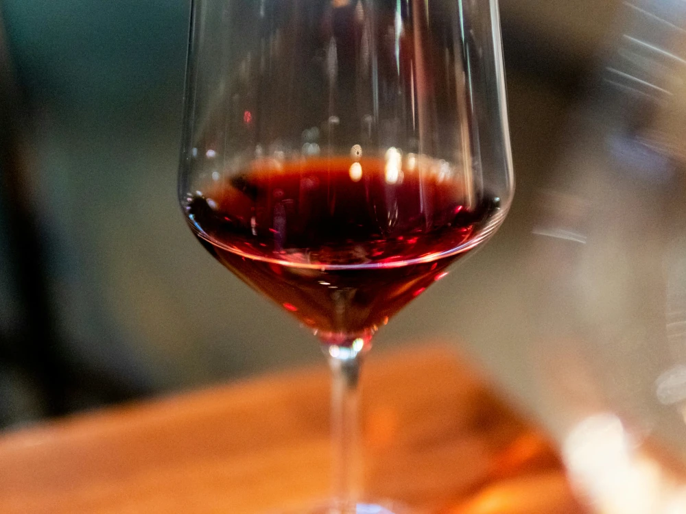

Pinot Noir
2025-09-19
Hösten har kommmit igen och då är det ju helt fantastiskt trevligt med ett glas rött, gott vin och varför inte ett vin av Pinot Noir? Pinot Noir började odlas i Frankrike i distriktet Bourgogne och det är allra främsta vinerna kommer ifrån Cõte d'Or. Druvan kan odlas i både varmare och kallare klimat men trivs allra bäst där det är lite kyligare. Den vill inte ha för mycket sol och har en ganska lång mognadsprocess vilket betyder att den skördas ganska sent på hösten. Därför är det bästa att odla den i områden med inte alltför stor skillnad på sommar och höst.
Viner gjorda av Pinot Noir är ofta mjuka och eleganta, med hög syra, balans och fruktiga smaker som t ex jordgubbar, gräs, lingon, hallon, kryddor och andra örter och dom passar till lättare kötträtter eller fisk. Vinerna innehåller ofta en lägre halt av både tanniner och alkohol än andra röda viner vilket är en fördel om man vill dricka ett lite mer hälsosamt vin.
Viner av Pinot Noir att testa under hösten:
- Couvent des Jacobins, 2023, Frankrike 239:-ett kryddigt vin med smak av hallon, jordgubbar, örter och peppar.
- Bourgogne Pinot Noir,Frankrike, 145:-vin med bärig smak med inslag av körsbär, lingon, jordgubbar, skogshallon och färska örter.
- Maple & Ash, USA, 109:-kryddig smak med inslag av peppar, nougat, skogshallon, jordgubbar blodapelsin.
- Greystone Wines, 2023, Nya Zeeland, 199:-kryddigt vin med inslag med fatkaraktär. Med inslag av jordgubbar, rostade nötter, hallon, sandelträ, kakao och blodapelsin.
- Revenge of The Little Pig, 2023, Tyskland, 99:-bärig smak med inslag av lingon, nougat, fat, skogshallon, jordgubbar och örter.
Ha en fin höst!